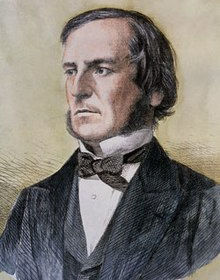

Étude du système d'information "Protection de la vie humaine"
Critique de la privatisation, du libéralisme et du commerce illégal d'un service-public qui enfreint la déclaration universelle des droits des humains, le préambule de la constitution française, le code de santé publique, le code civil, le code pénal, et toutes les lois nationales et internationales en vigueur, ce qui engendre crimes, souffrances, conflits, misères... et donc la dette publique puis la ruine des peuples, des élites, des dirigeants et des pays, au même titre que les guerres illégitimes et les grandes catastrophes naturelles
Première rédaction en 2015
Dernière mise à jour fin 2022
Temps de lecture : 35 minutes
- Énoncé logique et factuel du problème
- Terminologie métier d'un service public vital non-commercialisable et non-imposable
- Utopie logique prévue par la loi humaine en vigueur
- Conséquence de la privatisation de la santé, de l'aide et de la justice
- Solution logique employée avec efficacité par les anciennes et grandes civilisations
- Preuve absoute de démonstration et exempte de débat
- Considérations sur les droits
- Considérations sur l'aide
- Considérations sur les services médicaux d'urgence
- Considérations sur la neurotypicité et la neuroatypicité
- Conclusion
Versions alternatives
Taille : 354,6 Kio
Mise en ligne : 1 juin 2015
Mise à jour : 31 décembre 2022
Dernier téléchargement : 14 avril 2025
Téléchargements depuis avril 2021 : 414
Étude du système d'information "Protection de la vie humaine" ou critique de la privatisation, du libéralisme et du commerce illégal d'un service-public qui enfreint toute la loi en vigueur et engendre crimes, souffrances, conflits, misères... et donc dette publique puis ruine des peuples, des élites, des dirigeants et des pays
Énoncé logique et factuel du problème
À l'ère de la mondialisation technologique et communautaire, le sujet de la fonctionnarisation et de la privatisation de la santé, de l'aide, de la religion et de la justice n'est pas une question de liberté de choix de méthode mais de civilisation et de financement de la survie de la population et de l'espèce.
Il est parfaitement possible de résoudre cette problématique, ce qui est éternellement le seul et unique rôle contractuel de l'État, et ce qui détermine, soit la paix et la prospérité, soit le crime et la guerre. C'est ce que requiert la logique, la loi en vigueur, la déclaration universelle des droits humains et les pactes internationaux.
À qui objecteraient que les religions ne sont pas des organisations d'aide, on pourrait dire qu'en ce moment l'action sociale de l'État relève indéniablement de l'usage de la théorie psychiatrique, mais il suffit de dire que la principale motivation d'un individu à interroger un groupe spirituel et à requérir ses services est d'obtenir des réponses à ses questions sur son existence dont il ignore la nature et le rôle : il demande donc de l'aide pour résoudre cette ignorance et les problèmes qu'il rencontre avec son environnement. Qu'on lui apporte de bonnes réponses ou des mensonges est ici hors de propos. C'est la même chose avec les associations dites de bien-être ou de médecines douces occidentales comme orientales, et avec les clubs sportifs pour être en forme et heureux de vivre. Ainsi, si on questionne les groupes de pensée privés sur leurs buts, ils répondent invariablement ce qui précède tout en affirmant qu'ils ne font ni de la santé ni de l'aide ni de la justice qui relèvent de la prérogative de l'État, et pour se justifier ils nieront l'existence des lois contre le crime et contre la non-assistance.
Il est question ici ni de la liberté d'expression, ni du juste salaire mérité, ni du revenu des grands patrons et des artistes célèbres, ni du financement d'une retraite miséreuse ou luxueuse, ni de planifications d'actions plus ou moins utiles voire préjudiciables, ni même de malversations organisées qui peuvent exister dans n'importe quelle forme de groupement, mais uniquement d'une architecture erronée dans ses codes applicatifs provoquant l'obligation de détourner les fonds publics en mettant inéluctablement tout le monde en danger, tel que le démontre fatalement l'histoire, qui que soient les auteurs des manuels et les vainqueurs des guerres.
Il s'agit là d'un problème religieux.
L'athéisme, la laïcité, le monothéisme ou le polythéisme sous quelques formes que ce soient sont des religions, des cadres reliant des modes de pensée et des façons de voir le monde afin d'en proposer des explications et des règles de conduite.
Il est en réalité impossible de séparer l'État de la santé, de l'aide, de la justice et de l'enseignement sur la nature et les capacités de l'être humain et de l'univers, parce que ce sont là les choses qui sont la civilisation elle-même tandis que la privatisation est la barbarie elle-même. Le seul but des groupes privés dans ces domaines est d'imposer leur point de vue et de chasser pour manger. Cette situation est incohérente pour diverses raisons et elle cause autant de problèmes de société qu'un État mono-religieux, sinon plus, et de manière exponentielle dans le temps.
Le véritable État laïque est l'État multi-religieux où chaque école de pensée est chargée de fournir, à sa manière et dans le respect des lois communes, les services publics nécessaire à la formation et à la protection de la vie : le financement est alors proportionnel à la demande et à l'efficacité grâce à l'impôt sur les revenus non vitaux du commerce. Mais pour cela, il faut ne pas vouloir la guerre civile, le crime organisé et la souffrance du peuple. Les lois de l'offre et de la demande ne sont pas le capitalisme qui ne fait que les utiliser dans le but du profit financier. Nous trouvons là le rôle primitif et tribal de l'art qui finance les groupes : diffuser le point de vue de la pensée thérapeutique ou criminelle du son, du verbe, de l'image, de l'émotion, du phénomène et de l'évènement. Après, la question de savoir qui a raison ou tort relève du rôle des débats, de la science et de la loi de l'offre et de la demande.
C'est ce qu'on appelle le pluralisme du service-public en éducation, santé, aide et justice, ainsi qu'idéalement en spiritualité.
La privatisation actuelle enclenchée depuis les révolutions du 18ème siècle de l'ère commune et mise en place au 20ième n'est pas logique, n'est même pas légale et n'est pas du tout efficace, sauf pour quelques privilégiés qui profitent du plein usage de leurs droits et des techniques les plus avancées alors que ce n'est pas un problème de ressource mais d'éducation et de gestion.
La sécurité et la santé ne sont actuellement pas garanties par l'administration, seulement en théorie par la loi et pour certaines personnes selon certains critères discriminatoires. C'est tous les modèles d'architectures opérationnelles de la banque, de la finance et de l'assurance qui nécessitent une réorganisation car ils sont le fondement du système et ils en subissent les affres.
Il est possible et requis pour la survie du pays, des nations et de l'espèce de résoudre ce problème qui n'a rien à voir avec l'opinion politique mais avec une organisation dirigeante qui est privatisée et qui a donc malheureusement besoin d'une certaine quantité de personnes incapables de travailler, qui souffrent et qui ont des problèmes, afin de générer du revenu qui n'est pas fourni par l'impôt pourtant utilisé pour fabriquer cette source financière qui étrangle de plus en plus le système. Cela entraine inéluctablement la chute des pays et de la civilisation post-révolutionnaire alors que cette organisation a besoin du plus grand nombre possible de travailleurs en bonne santé afin de financer leur travail et leur existence.
On comprendra ceci en considérant le peuple et l'État dans son ensemble en tant que groupe : le service public médico-social et juridique-judiciaire d'un pays ne peut jamais être privatisé sans créer le danger, le chômage, la précarité, la dette et l'insécurité, car ainsi c'est l'État lui-même qui est privatisé et Il ne peut pas agir pour respecter Sa loi et Il ne peut pas assurer Sa protection, puisqu'abstraction faite des considération de pouvoir, de relations et de fortunes, l'État est le peuple lui-même : faible à Sa naissance, puis fort si on prend soin de Lui. Ce n'est pas que privatiser ou nationaliser cette organisation cause ou solutionne le problème de la méchanceté et du crime. Mais dans le premier cas, il y a favorisation de l'extinction de la vie, car cela oblige à soumettre la loi aux transgressions et à causer les problèmes de la société. Et dans le second cas, il y a une importante élimination de l'intérêt dans le mal et dans la souffrance administrativement causée à autrui pour quelque raison injustifiable que ce soit.
Le problème religieux i.e. le problème de l'organisation des groupes humains et du service public de formation et de protection de la vie n'est finalement et au-delà des luttes d'opinions qu'un problème d'impôt, et ce problème résulte d'un mauvais point de vue sur le Trésor Public lorsque celui-ci est considéré non pas seulement comme un fond de financement des activités de gestion du pays, notamment d'administration législative et territoriale incluant les services vitaux de santé, d'aide et de justice, mais comme un gâteau ou un pactole dont on veut une part pour un usage privé autre que le juste salaire d'activité de service au sein de l'État : ce problème est d'autant plus grave et critique que ce fond public est considéré non pas comme un moyen de service pour faire vivre chaque membre de la société, mais comme une source de subsistance pour une élite qui ignore ainsi la théorie de l'effet domino, puisque ce sont les vivants qui génèrent le revenu commercial et l'impôt, et non les invalides et les morts.
Le pilier fondamental et ancestral de la prospérité ou de l'effondrement de toute civilisation est le point de vue au sujet du taux et de l'usage des taxes. Tel est le cœur du problème religieux qui est celui du capital, de la source du revenu et de son usage.
Terminologie métier d'un service public vital
non-commercialisable et non-imposable
Santé et médical veut dire hospices, hôpitaux, cliniques, centres de santé, maisons de retraite, médecins, dentistes, kinésithérapeutes, ostéopathes, chiropracteurs, infirmiers, ambulanciers, pharmaciens, laboratoires, assurances et mutuelles de santé, y compris agences, syndicats, unions, fédérations ou autres entités prodiguant des soins médicaux.
Aide et assistance sociale ou humanitaire et spirituelle veut dire collectivités locales, associations, fondations, religions ou entités telles que les artistes prodiguant information, orientation et assistance non médicale et non juridique afin que les victimes, les sans-abris, les malades et les personnes vulnérables ou en dangers survivent grâce à l'éducation et à l'accès aux services de santé et de justice qu'on ne pourrait pas obtenir par soi-même.
Justice et action juridique ou judiciaire veut dire policiers, gendarmes, avocats, notaires, huissiers, greffiers, procureurs, juristes, magistrats, juges, protections juridiques, organisations de défense, etc.
Service public veut dire prestation auprès de la population d'actions visant à l'instruire, à la maintenir en bonne santé et à la protéger de la variance des évènements nuisibles.
Service privé veut dire relevant strictement des affaires et des biens personnels et commerciaux non indispensable à la protection de la santé en cas d'agression, d'accident ou de maladie, et à la protection de la personne en cas de préjudice matériel causé par la maladie, par un tiers ou par une catastrophe naturelle, et pour les actes tels que le mariage et le divorce.
Utopie logique prévue par la loi humaine en vigueur
Les problèmes du travail et du chômage ne sont tout simplement que des problèmes de santé, d'aide et de justice chargés de gérer l'erreur, le crime, la maladie et la catastrophe naturelle.
Lorsqu'on est malade ou blessé on ne peut pas travailler, donc on ne peut pas payer l'impôt, alors on appelle le docteur qui est payé par l'impôt dans le but qu'il nous répare et nous soigne afin qu'on puisse aller travailler et payer l'impôt qui va payer son salaire. De même, l'avocat est payé par l'impôt pour informer, et pas seulement pour conseiller, dans le but de résoudre les litiges grâce à une médiation ou sinon devant le juge, afin que les travailleurs ne soient pas confus et occupés à accomplir autre chose que leur travail avec le moins d'erreurs possible. Idem pour les aides sociales, les aides aux victimes et les religions ou les groupes de pensées et de paroles qui orientent, conseillent et assistent dans ce même but.
Maintenant si le docteur, si l'avocat et si l'aide sont privatisés, même chargés de mission de service public, leurs buts pour survivre est de chasser au jour le jour et de maintenir selon certains critères certaines personnes dans leurs souffrances et dans leurs problèmes qui doivent être fabriqués et qui s'aggravent obligatoirement avec le temps. Car sinon qui paye leurs actes s'ils ne reçoivent pas un salaire fixe ou des dons, contaminant ainsi et de facto tous les hôpitaux, tous les tribunaux et tous les secteurs de l'activité humaine, y compris la banque-assurance-finance et l'art qui en deviennent le pilier central tout en finançant la recherche et les projets non pour la survie de la société publique mais pour le profit de la monnaie privée.
La motivation fondamentale des soignants est de faire survivre en faisant survivre les autres. Les défenseurs veulent être en paix en faisant la paix chez les autres. Les assistants de quelque couleur que ce soit veulent se développer en faisant en sorte que les autres évoluent et se cultivent correctement.
N'est-il pas étonnant d'agir contre sa propre raison de vivre ?
Conséquence de la privatisation
de la santé, de l'aide et de la justice
En France, comme en Europe et dans le Monde des Nations Unis bâtit sur la Déclaration Universelle des Droits et sur les Constitutions des États qui sont les conditions générales de supervision par les élus des groupes de pouvoir, toutes les entreprises privées, toutes les associations, toutes les fondations et toutes les ONG qui sont chargées de mission de service public ou qui sont reconnues d'utilité publique dans les domaines de la santé, de l'aide et de la justice sont hors-la-loi car leurs statuts enfreint la Déclaration et la Constitution à cause de leur mode de financement.
Qu'une organisation de pensée et de réflexion soit privée parce que l'État n'en voudrait pas en raison de sa politique administrative mais qu'Il autorise son existence et son indépendante financière, c'est une chose car le but est de convaincre par la parole, mais qu'une organisation de service public d'action de survie et d'intervention auprès des victimes le soit, c'est illégal au regard des lois humaines en vigueur.
Nous parlons ici d'organisation et non des individus eux-mêmes qui dans tous les cas et quelles que soient leurs appartenance à des groupes ou à aucun sont légalement soumis à l'obligation de porter assistance et de dévoiler la vérité des crimes selon leurs moyens, sans mettre outre mesure leurs vie en danger. Il est des gens pour dire qu'une telle loi n'existe pas et que parce qu'ils sont dans tel ou tel groupe public ou privé, ils n'ont pas à respecter la loi en vigueur : ce sont des menteurs et des méchants.
Cette privatisation est la seule et unique cause de l'explosion démographique des souffrances corporelles et des litiges sociaux-professionnels qui est décuplée par le niveau technologique. Il ne s'agit là ni d'une opinion politique ni d'une idéologie de quelque nature que ce soit, mais d'un constat et d'un fait logique fondamental : peu importe qu'on agisse bien ou mal, car privatisées, les choses relatives à la protection de la vie entraînent assurément et inéluctablement l'éventuelle prospérité potentielle d'une civilisation vers l'effondrement jusque dans les finances publiques, y compris militaires. Il n'y a absolument aucune autre cause à tous les problèmes de société sinon la méchanceté, la guerre, les épidémies, les pollutions industrielles accidentelles et les grandes catastrophes naturelles.
La médecine est chargée de soigner les corps. L'aide est chargée de secourir les faibles et les victimes. La justice est chargée de condamner les méchants. L'éducation générale est chargée de former des citoyens capables de lire et écrire pour se former à un métier qui sert à payer l'impôt ou qui sert à réparer ceux qui ne peuvent pas payer l'impôt. Le groupe de pensée est chargée de développer la personnalité sociale et quelques heures de littérature et de philosophie à l'école publique ne suffisent pas. Quand on dit que les fonctionnaires d'un pays ne doivent rien posséder, c'est parce qu'ils possèdent tout et que leur survie dépend de la survie de ceux qui possèdent et payent l'impôt. Nous ne sommes pas là en religion mais au-dessus.
Tout acte libéral de ces choses est par définition universelle et constitutionnelle illégal car il est stipulé aux articles 10 et 11 du préambule de la Constitution française que c'est la Nation i.e. l'État qui assure à chacun les conditions nécessaire à son développement et qui garantit la protection de sa santé et de ses biens. La Nation et pas des entreprises privées qui dirigeraient le pays en cherchant du profit. Tels sont les termes du contrat basé sur la dépense des fonds publics de l'impôt. Sinon, c'est tout le service public, toute l'élite et tout le peuple qui est contaminé. Tout celui qui dirait que cette assertion est fausse et illégale, ou irréalisable, mentirait contre la Constitution, contre la logique et contre sa propre survie et celle de l'espèce.
La sécurité sociale et son assurance maladie privée - car même étant un organisme public les dirigeants et les salariés sont de droits privé sous tutelle du ministère de la justice - ainsi que toute autre assurance ou mutuelle de santé, de protection corporelle et de protection juridique devraient être des services d'orientation et de résolution entièrement et directement prodigués dans les meilleures conditions d'accès par des fonctionnaires de l'État selon le modèle de l'offre et de la demande de service, y compris auprès des personnes invalides et alitées, par téléphone ou à domicile si nécessaire.
Sinon une des conséquence de la privatisation de cette architecture est d'autoriser l'impunité arbitraire et illégale de l'acte d'isoler et de porter atteinte à l'intégrité de la vie de victimes de traumatismes et de maladies en invoquant de manière mensongère la liberté, le respect de la loi, la protection de l'ordre public et l'autorité de l'État comme justification absolue en tant que bon-droit et bien-fondé.
Accuser de harceleurs ou de malades mentaux des personnes opprimées, souffrantes et confuses qui ne reçoivent pas l'aide adéquate qu'ils réclament et qui est requise par la loi n'est qu'hypocrisie morbide malintentionnée.
Depuis la nuit des temps, la capitalisation dans le domaine de la santé, de l'aide et de la justice, comme de l'éducation, n'a jamais fonctionné. Ça ne fonctionne pas et ça ne fonctionnera jamais car ce sont des services publics et non des entreprises privées.
Cette privatisation n'a rien à voir avec une mauvaise dictature ni même avec une dictature bienveillante qui serait préférable et cela était connu notamment de la chine antique et de l'Égypte ancienne où le docteur et l'avocat étaient ce que la loi actuelle dit qu'ils doivent être afin de garantir santé, aide et justice en tant que droit pour tous libre d'accès en cas de nécessité : les bâtisseurs des pyramides qui étaient des volontaires avaient, comme le reste de la population, le droit gratuit et immédiat d'être soigné en cas de maladie ou de traumatismes corporels, ainsi que d'accéder à une cour de justice pour y régler leurs problèmes qui les empêchaient de travailler, et ils avaient un revenu de retraite ou d'invalidité très correct.
Ce que les dirigeants actuels de l'organisation, qui proteste sans cesse contre les réformes françaises en cette décennie 2010 de l'ère commune, nomment "dérive sécuritaire de l'hospitalisation psychiatrique et étatisation du service public en santé et en justice avec mise en danger de la population" est en vérité le seul moyen de garantir l'indépendance et la bonne marche non seulement du système de soins et de protection, mais également de tous les autres, et ce, dans l'intérêt de tous, des dirigeants comme des dirigés, et des enfants comme des personnes âgées, et surtout des malades et des traumatisés corporels et psychologiques qui sont le fonds de commerce de ce système culpabilisateur.
En quoi interdire l'administration immédiate et forcée de substances mortelles à une personne arbitrairement et abusivement arrêtée est-elle une dérive sécuritaire ? En quoi garantir la sécurité de l'emploi et un salaire stable du personnel soignant et du personnel de justice met-il la population en danger ? Que vont dire les associations d'aide et les groupes spirituels quand ce sera leur tour ? Qu'on porte atteinte à la liberté de mentir et de ne pas respecter la vie et la loi ?
Il ne viendrait jamais à l'idée d'une autorité civilisée et saine d'esprit de privatiser l'eau de base car elle en assurerait la qualité et la distribution grâce à l'impôt et en monétiserait la consommation privée et industrielle au-delà de la quantité vitale.
Solution logique employée avec efficacité
par les anciennes et grandes civilisations
Re-fonctionnariser à sa juste valeur le personnel soignant, le personnel de l'aide et le personnel de la justice formés et payés aux frais de l'impôt selon des quotas nécessaires de travailleurs sélectionnés et motivés pour la maintenance de la bonne marche du pays et des travailleurs qui payent l'impôt.
Ce n'est pas une option facultative et c'est une obligation vitale pour la survie de notre espèce en cours de mondialisation, même si des gens croient le contraire parce qu'à moins d'être méchants et stupides ils ne savent rien malgré leurs connaissances et leurs pouvoirs, et parce qu'on leur a enseigné à faire non pas la guerre à l'ignorance et aux concepts nuisibles mais aux corps et à l'existence des gens eux-mêmes. On peut tuer des millions d'individus, on n'aura pas touché un seul atome de ce qu'on combat, peu importe qu'on ait raison ou tort, à moins d'avoir exterminé toute vie sur terre.
Qu'un groupe de santé, d'aide ou de justice soit privé jusqu'à jouer en bourse avec la vie de la population tout en alléguant avoir de bonnes intentions est par définition même de l'assertion un illogisme illégal et une incohérence hypocrite relevant de l'ignorance, da la convoitise ou de la démence, et causant dans tous les cas un Crash System, même si on change la déclaration universelle des droits, la constitution et le code pénal pour autoriser une telle chose au niveau du fondement de la Nation.
Il est évident que cela ne résoudra pas le problème de la méchanceté et du crime puisque de la prérogative de l'éducation. Mais un bon système, une bonne éducation et une bonne orientation professionnelle réduisent ce problème qui relève de l'individu.
Pour cela, il suffit simplement de changer les statuts et de réorganiser la procédure hiérarchique afin qu'on respecte les conditions générales de supervision de l'État. Il est évidemment nécessaire de réformer les rouages de la banque-assurance-finance et de niveler certains salaires patronaux, y compris le revenu des médias et des artistes, afin de répartir équitablement les ressources et de maintenir un impôt fort et juste. Tout le monde y gagnerait d'un côté la sécurité de l'emploi et de l'autre la protection de la vie, même si on ne travaille pas et si on est traumatisé ou malade. Les services publics de base en santé, en aide, en justice et en religion, deviennent alors les piliers de la civilisation grâce à l'impôt des commerces auquel peuvent s'ajouter les dons. C'est seulement alors que le slogan "liberté, égalité, fraternité" est appliqué, sinon c'est assurément la barbarie d'office sans "justice".
Une des conséquences budgétaire est que le salaire d'un fonctionnaire n'a pas à être imposable puisque payé par l'impôt, ce qui annule une certaine partie de la fraude : il y a moins à détourner par ceux qui gèrent les comptes publics ainsi non privatisés et il y a moins de fuites. C'est une logique implacablement éthique et juste qui augmente l'espérance de prospérité d'une civilisation et le temps passé à accomplir son travail et pas d'autres choses qu'on appelle parfois à tort des "emplois fictifs".
Preuve absoute de démonstration et exempte de débat
Quant aux principes instaurés initialement comme postulats fondamentaux
par la Déclaration des Droits des Humains, par la Constitution
et par les grandes lignes de la Législation
Comme il a été précédemment cité, le développement (personnel), la protection de la santé et la sécurité matérielle i.e. l'accès à l'éducation et aux religions adaptées, sûres et efficaces dans les meilleures conditions d'accès, l'accès aux soins médicaux adaptés, sûrs et efficaces dans les meilleures conditions d'accès, l'accès aux aides adaptées, sûres et efficaces dans les meilleures conditions d'accès et l'accès aux tribunaux compétents incluant l'assistance d'un avocat, sans obstruction, sans délai exagéré, sans préjugé et dans les meilleures conditions d'accès, sont définis par la loi en vigueur non pas comme des choses qu'on peut ou ne peut pas se payer selon sa réussite socio-professionnelle et selon les relations qu'on entretient avec les autres, ou encore comme des choses dont on peut accorder ou ne pas accorder le droit d'usage selon quelque critère que ce soit (et même les criminels ont le droit de se faire emprisonner avec humanité et sans nuisances), mais comme des choses auxquelles tout le monde a droit en tant que services publics libres d'accès financés directement par l'impôt et administrés par des fonctionnaires ou des sous-traitant sous la supervision des fonctionnaires : c'est l'article 9. Sinon il n'y a aucune égalité et aucune fraternité ni même de liberté et encore moins de justice, d'où l'importance d'avoir le droit anarchique de proposer le choix méthodologique du moment que ce choix n'a pas été prouvé et jugé inapproprié et nuisible quant au rapport du gain et des risques gérables.
Considérations sur les droits
Il est un fait juridique stipulé par les procédures administratives françaises, européennes et mondiales que seuls ont des droits devant l'État, pour eux et pour les autres : les docteurs qui certifient, les élus qui décident, les patrons qui organisent et les avocats qui plaident. Ils sont ainsi les seuls à pouvoir saisir les instantes de justice et de recours puisque l'usage des droits par les autres citoyens, pourtant garantit par la constitution et par la législation comme absolu et non opposable, est soumis à leurs choix subjectifs et à leurs décisions arbitraires, quoi qu'on fasse croire à ce sujet dans les brochures et dans les médias. Rare sont les cas où l'on peut "aller devant le Tribunal" sans avocat pour se retrouver face à des avocats et à des magistrats qui ne vous écoutent pas. Cette situation est non conforme car illégale et néfaste à tout le monde.
Il est également fait juridique que les victimes, ayant ou pas une déficience mentale de quelque nature et de quelque origine que ce soit, ont toutes, d'après les cases du formulaire de classement sans suite des plaintes pénales, aucun droit de défense et de réparation auprès des procureurs, puisqu'il suffit d'en cocher une au choix sans devoir rendre des comptes à qui que ce soit sinon aux juges du tribunal qui ont une coutume collective nommée nul ne peut se constituer de preuves à soi-même", en vertu de laquelle est quotidiennement niée l'existence des dossiers de preuves constitués par les parties civiles qui sont ainsi déboutées, sans compter les habituelles demandes de non-lieu quand il n'y a pas abus de pouvoir et entraves ou revendication d'un décret contre la loi ou d'une sentence de délai de prescription offrant l'impunité même aux crimes en cours. Pourtant, le rôle de la justice n'est pas de chercher comment ne pas poursuivre et ne pas condamner, mais de comment stopper les nuisances et réparer les préjudices, même lorsque les responsables ne peuvent pas être identifiés ou ne peuvent pas payer, grâce aux fonds de garantie constitutionnel alimenté par l'impôt.
Il est ainsi un fait systémique que privatiser l'organisation médico-sociale et juridique-judiciaire qui dirige les comités publics des préfectures et des agences régionales des territoires de l'État, peu importent les nomenclatures utilisée selon les pays et peu importent les croyances ou les opinions à ce sujet, est le meilleur moyen de ne rien faire pour protéger correctement et efficacement la santé et les biens de toutes les personnes, voire de le faire de la mauvaise manière, sinon pour les familles de l'élite.
Il est par conséquent un fait juridique structurel que le statut libéral de la médecine, de l'aide, de la religion et de la justice est non seulement potentiellement nuisible mais avant tout fondamentalement illégal, contrairement à ce qu'on affirme de plus en plus. À moins d'être soi-même avocat, la seule et unique obligation de fournir le service d'un avocat à un individu est soit au cours d'une garde à vue soit lors d'une poursuite par un procureur devant une cour de justice - l'action de l'avocat étant ici hors de propos. Dans de telles conditions d'application de coutumes illégales et de décrets illicites parfois à l'aide de faux-documents, c'est toute la loi qui sert à rien du tout puisqu'elle est utilisée selon des intérêts et non selon la réalité des faits et des préjudices.
La tendance actuelle, héritée de la révolution du 18ème et mise en place au 20ème siècles afin de créer un monde libéré de la barbarie, de l'oppression, de la dictature et du crime, est malheureusement de tout privatiser de plus en plus jusqu'à l'administration de l'État lui-même où il ne resterait que des politiciens propriétaires d'entreprises privés. Les dirigeants ne doivent pourtant rien posséder de commercial car ils sont partout chez eux du fait qu'ils possèdent la responsabilité de gérer l'organisation et la survie du pays et de chaque citoyen indigène et étranger qui y réside légalement ou pas : c'est comme ça que les conflits d'intérêts disparaissent, et il n'est ici pas question de caste mais d'emplois, de moyens et de buts, quelle que soit la durée des mandats qui sont ainsi un choix.
L'organisation chargée de la "protection de la santé et des biens des personnes" est la première des choses à changer pour obtenir la civilisation de l'espèce humaine. Telle est la logique des articles 9, 10 et 11 du Préambule de la Constitution de 1946, et pas seulement celle du premier, du quatrième, du cinquième et de tous les autres. Il ne faut pas croire cette affirmation au cas où on ne percevrait pas la logique de la démonstration, mais examiner les preuves et les statistiques, vérifier la législation en vigueur et les procédures administratives, et questionner les responsables et les autorités : une certaine quantité de personnes traitent mal une certaine quantité de leurs semblables dont ils font des victimes qu'ils accusent et condamnent illégalement et sans recours possible à subir d'abominables forfaits afin de justifier leurs actes qui mettent la vie en danger. Des traumatisés corporels deviennent alors de plus en plus pauvres jusqu'à se retrouver sans rien, sans secours et sans accès aux droits, tout en étant opprimées, agressées, kidnappées, séquestrées, torturées et enterrées.
Lorsqu'une telle organisation défectueuse dirige la vie des citoyens et refuse de changer ses mauvaises méthodes, il n'est pas étonnant que les problèmes s'aggravent inéluctablement au préjudice de tout le monde parce que l'impôt sur les revenus des activités du commerce est le fondement de la protection des humains et de la civilisation des systèmes éducatif (enseignement du savoir), social (aide matérielle), législative (gestion de la loi), administratif (gestion de la procédure), judiciaire (protection des personnes), civil (ordre interne), militaire (ordre externe), statistique (gestion des quotas), financier (gestion de l'impôt), spirituel (aide mentale), marchand (commerce) et médical (réparation du corps). Ne sont en effet capitalisables que les marchandises et les services non vitaux et non administratifs qui ne relèvent pas de la prodigation communautaire aux individus comme par exemple les routes publiques, les logements dits sociaux pour que personne ne soit sans logement, les bâtiments de la nation pour organiser et divertir le pays, le forfait vital de l'eau des habitations, la nourriture de base, les vêtements de base, l'instruction générale, les soins médicaux qui ne sont pas de convenance, la protection contre les nuisances d'origine naturelles et humaines, l'assistance aux démunis et aux victimes, l'indemnisation des accidentés et des invalides, la recherche médicale et technologique, etc.
C'est avec une facilité déconcertante que des serviteurs de la république au sein des cabinets, des assurances, des mairies, des préfectures, des tribunaux, des associations, des médias, des religions et des gouvernements, refusent collectivement et sans recours possible d'entendre et de considérer les faits juridiques et les témoins présentés par des victimes afin d'arbitrairement et faussement les condamner "malades mentaux, chose considéré par la plupart des citoyens comme étant pire que d'avoir commis le plus grave des crimes, dans le but avoué par écrit de les maltraiter davantage et de leur laisser de plus graves séquelles que celles signalées et qui résultent d'agressions, d'accidents et de mauvais soins qui relèvent d'une escroquerie de masse dévoilée par la science, définie par la loi et démontrée par les dossiers des preuves et des charges constitué à l'aide des documents écrits et signés par les protagonistes et par les observateurs mais dont l'existence est inlassablement niée en invoquant par l'intermédiaire du défenseur des droits le bien-fondé et le bon-droit de décrets sournois et de coutumes malveillantes, que les gens ne connaissent pas et c'est à peine s'ils connaissent quelques lois qui disent que le mensonge, le vol, l'agression et le meurtre est interdit et puni, employées pour justifier l'infraction de toute la loi et la préméditation planifiée de graves crimes en cours.
L'État est toujours responsable de protéger la vie humaine et les biens légitimes : c'est son rôle contractuel et Il n'en a pas d'autre sinon assurer le développement éducatif et personnel de l'individu, et lorsqu'il ne le fait pas c'est que le bénéfice est ailleurs.
Au sein d'une société civilisée, payer pour boire et manger le nécessaire vital, payer pour des habits et un logement minimum, payer pour être soigné, payer pour être éduqué, payer pour être conseillé, payer pour être aidé, payer pour être protégé et payer pour accéder à la justice, c'est à jamais incompressible car c'est très illogique, sans même considérer que le service est bienveillant ou malveillant. Les victimes n'ont pas à payer pour que les méchants puissent agir librement dans les coulisses. Peu s'en sortent vraiment et toujours avec des séquelles. L'argument de la liberté et de l'assistanat régulièrement brandit par les opposants à la communautarisation du service public est un argument fallacieux, anti-social, anti-civilisationnel, anti-nation et anti-humain.
La situation administrative du monde actuel est inquiétante car utiliser l'impôt pour autre chose que bâtir des maisons et protéger les habitants est dangereux et néfaste. Les opérateurs télécoms ont une grande responsabilité vis-à-vis du respect équitable des droits et de l'usage correct de la loi, car la communication est le point faible névralgique des individus, des couples, des familles, des groupes, des communautés, des peuples, des nations et de l'espèce, et tel est le sujet de la neutralité du web.
Il y a donc cas de force majeure et urgence, car la menace sur la vie humaine est en directe corrélation avec la menace de l'emploi public et non le contraire. Le corollaire de cette assertion est que la force d'un pays est déterminée par la force de son trésor public qui lui-même est égale la force du service public. Un service public privatisé engendre des finances publiques faibles, ce qui, aux yeux des éons et abstraction faite des invasions et des fléaux auxquels on résiste selon cette force et non selon la technologie scientifique , entraîne un pays vers sa disparition. Cette loi est applicable jusqu'à l'espèce si tout le monde fait pareil.
Il est une loi de la même nature que celle des forces de l'univers et de la vie comme par exemple la gravitation : lorsqu'on trébuche, on tombe, et si on n'aide pas, ça fait mal, et ça peut faire très mal, jusqu'au décès, et c'est ce qu'engendrent les agressions, les mauvais soins et l'abandon collectif, interdits notamment par la déclaration des droits, par la constitution, par le code pénal et par la jurisprudence.
La souffrance mentale est peu de chose comparé à la souffrance physique, car c'est généralement cette dernière qui génère la première, et pas l'inverse, malgré ce que clament certains menteurs qui parfois les fabriquent pour vivre de la souffrance et de la culpabilisation. En effet, il est impossible à l'esprit humain de fabriquer une entorse ou de déchirer un muscle par la seule force de la pensée à moins d'user de télékinésie. Cependant, le stress lui-même va causer des dérèglements physiologiques qui peuvent fragiliser les organes sur le long terme, mais cela peut facilement être annulé ou géré grâce à l'hygiène de vie, grâce aux plantes médicinales et surtout grâce à l'élimination de la source de l'oppression.
L'affirmation arbitraire non opposable comme quoi les traumatismes corporels subits sont une maladie mentale des victimes et que celles-ci ont moins de droits que des criminels est très dangereuse, puisque relevant de l'attentat à la vie dans le cadre d'un crime contre l'humanité, ce qui dépasse le simple massage iatrogène d'une entorse.
La seule maladie mentale qui sévit dans le monde est la méchanceté qui engendre des victimes qui ont des problèmes et qui causent des problèmes.
C'est un mensonge que d'affirmer qu'on ne connaît ni l'origine du mal de dos ni le moyen de le soigner alors que cette souffrance est la manifestation de conséquences locomotrices et physiologiques d'entorses vertébrales causées par la naissance, par la marche, par le sommeil, par le travail, par le sport, par les coups, par les agressions et par les divers micro et macro-traumatismes corporels subits au cours de la vie et lors des opérations, et qui lorsque la chirurgie n'est pas nécessaire se soignent efficacement avec la médecine mécanique et ostéopathique avant même de procéder à la rééducation chez le kiné.
Lorsqu'il n'y a pas de cause médicale et de handicap tel qu'une surdité ou un traumatisme physique ou mental associé à un isolement auquel on ne remédie pas, l'entrave et la rupture de communication n'est que le symptôme d'une incapacité liée à une échelle graduée depuis la peur jusqu'à l'homicide en passant par la haine, la finalité au-delà des apparences étant l'échec pour toutes les parties en présence. Certes, deux personnes qui ne veulent plus se parler cela n’entraîne en général que peu de conséquences, mais plus on monte dans la hiérarchie du management et des responsabilités envers autrui, plus ce symptôme devient grave.
Lorsque le patron d'une grande multinationale qui met au point, fabrique et vend aux autorités des armes chimiques anti-citoyens qui sont spécifiées être illégales par la loi et mortelles par la documentation, utilisées dans le but avoué de faire taire, après qu'un chef de service ait reproché d'être un problème comportemental résultant de difficultés sociales à interagir et du mauvais traitement administré par le personnel soignant des assurances et des mutuelles, et après qu'un praticien réputé et protégé par les autorités porte atteinte à l'intégrité de la vie, que lorsqu'il reçoit un revenu valant des centaines de fois celui qu'on versait à la victime pour refaire son logiciel de prises de commandes clients et qui a été divisé par 2,5 pour fixer la valeur de la pension nommée salaire payé par l'assurance maladie qui est une entreprise privée chargée de mission de service public et qui possède de fait son corps au nom de l'État depuis sa naissance via le NIRPP, c'est un abominable crime aussi illégitime qu'injustifiable.
Lorsque le fondateur d'un grand studio d'animation annonce à ses employés qui se plaignent de ne recevoir que des miettes du pactole des diffusions mondialisées, que c'est parce que malgré passer plus d'heures au travail que lui ils ne s'investissent toujours pas assez, au lieu de leur avouer que l'archaïque et trompeur droit du sang de la naissance existe toujours puisqu'étant seulement et simplement le droit du pouvoir relationnel, c'est une hypocrisie esclavagiste et il est nécessaire de remettre en question la nature et la finalité de toute la chaîne de production.
Lorsque le patron d'une grande entreprise d'eau en bouteille ne s'inquiète pas que les petits-enfants des petits-enfants de ses petits-enfants n'aient pas d'eau à boire, il est requis de se demander si c'est de la folie ou quelque chose d'autre.
Ce système administratif, qui à quelques exceptions près fabrique la souffrance physique et mentale d'une espèce en cours de mondialisation, est l'unique chose à déboguer pour obtenir la civilisation de l'espèce humaine et la réduction de toute la chaîne des problèmes de société imposée aux victimes et composée de discrimination, d'insécurité, de souffrance, d'incapacité, de chômage, de faillite, d'expulsion, d'abandon et de dépérissement.
En général, la réaction de défense typique des organisations défectueuses est la négation des problèmes et le discrédit des victimes qui se plaignent, à l'aide de contrevérités souvent calomnieuses et parfois préconçues.
L'expression coutumièrement prononcée est : "vous ne pourrez rien prouver car seul le procureur et le juge ont le droit d’apprécier l’opportunité d’engager des poursuites".
Considérations sur l'aide
L'expression "entité privé à but non lucratif ou reconnu d'utilité publique" est litigieuse et contradictoire : les mots "philanthropique" et "humanitaire" sont plus précis, plus clairs, plus francs et plus acceptables, car imposant de fait l'administration de l'aide et pas seulement la récolte de dons pour payer les frais de vie de bénévoles qui peuvent librement refuser d'aider les personnes en péril en faisant comme si de rien n'était tout en allant jusqu'à leur demander de l'argent. En réalité, ces aides privatisées ne prétendent généralement à exister et à récolter des dons que lorsque les groupes qui gèrent ces entités et ceux qui gèrent l'État ne fournissent pas les garanties contractuelles de protection de la santé et des biens revendiquées.
C'est pourquoi, dans ce domaine, comme en santé et en justice, conformément à la constitution française, s'il est reconnu non nuisible, et s'il l'est alors il doit être publié au journaux officiels les raisons de son interdiction et le jugement du tribunal à ce sujet, tout groupe humanitaire, caritatif ou religieux devrait être accrédité d'État en tant que service public proportionnellement financé par les cotisations fiscales et par les dons éventuels des souteneurs et des participants qui œuvrent au but de ce groupe, et par ceux qui utilisent ses services en tant que possibilité de choix méthodologique au même titre que l'enseignement qui propose diverses matières.
Il n'y a aucune raison de privatiser ces choses sinon par une erreur d'architecture relative à la gestion de l'impôt. Capitaliser le commerce non vital et l'immobilier est nécessaire et requis pour l'impôt et donc pour la civilisation/ Mais capitaliser la santé, la justice et l'aide, c'est capitaliser la vie, le savoir et l'éducation, et faire cela est une aberration basique qui œuvre contre la civilisation. Les dons sont quant à eux un mouvement du cœur qui ajoute à l'impôt obligatoire et c'est donc quelque chose de non imposables, et non une déduction masquant un vol et un détournement de l'argent public pour des activités illégales, qu'elles soient bien ou mal intentionnées.
Après avoir découvert le système des associations, des fédérations et des organisations non gouvernementales internationales, on ne peut que trouver hypocrite que certaines de ces entités privées puissantes qui supervisent des administrations publiques se retranchent derrière l'absence de pouvoir et d'obligation pour enfreindre la loi et pour ne pas porter assistance aux personnes en péril sur toute la planète jusqu'aux niveaux nationaux et locaux dont ils gèrent la marche évolutive lors de leurs comités, rassemblements et conférences, tandis que les services des États qu'ils dirigent au nom de ces groupes de pensées et de réflexions ne font rien de plus ni de moins qu'intervenir selon des intérêts personnels et selon la position sociale des demandeurs sinon faire croire que cette bureaucratie est une machinerie obscure, incompréhensible, imperméable et indépendante du peuple.
Pourtant, la non-assistance par abandon est un délit, et le fruit de ce délit est le plus haut crime, et malgré Internet, le monde n'est pas libre, car une personne physique ne peut pas légalement exercer seule une activité à but non lucratif à l'exception de l'auteurisation d'ouvrages littéraires et artistiques diffusés sans bénéfice d'auteur sous peine d'être accablé de taxes qui sont ruineuses à moins d'avoir du succès commercial. En d'autre termes, seul (même si on n'est jamais vraiment seul sinon sur une île déserte), on ne peut rien faire comme action humanitaire sinon parler, écrire et dessiner ou donner de son argent personnel à celui qui en aurait plus besoin que nous.
Considérations sur les services médicaux d'urgence
Les services d'urgence devraient au même titre que les disciplines actuelles imposer l'astreinte de réparateurs du système locomoteur en cas d'accident ou d'agression sur la route ou à la maison, que ce soit sur place ou qu'on y soit amené, car entre ne rien faire et empoisonner durant des années puis amputer ou pire, il y a toute une échelle graduée de problèmes et de solutions efficaces connues depuis l'aube de la médecine. C'est la même chose avec le juriste ou le bénévole lorsque face à un problème critique ou une grande confusion, on a besoin de savoir quoi faire et ne pas faire. Sinon, on fait n'importe quoi n'importe comment et les méchants vont s'en régaler. Lorsqu'il y a un incendie ou une avalanche, qui regarde sans rien faire en trouvant cela plaisant ?
C'est vital et obligatoire en vertu de la science et de la constitution, et c'est une chose très connue de n'importe quel diplômé de la faculté de médecine. Il suffit d'interroger les assurances, les docteurs, les députés, les tribunaux, les mairies, le gouvernement, ou toute autre autorité laïque et religieuse, et d'observer leurs réactions. En privé, ils disent aux ignorants et aux victimes qu'ils ne savent rien au sujet de la souffrance corporelle des êtres vertébrés humains comme animaux, mais c'est rarement la vérité et ils s'énervent puis refusent de communiquer ou portent plainte.
En effet, les docteurs savent que sauver une articulation ou un muscle blessé, en particulier au niveau vertébral, c'est aussi vital que de sauver un cœur ou un cerveau, et que quel que soit le délai de mise en danger de la vie de quelques secondes à de nombreuses années, il faut dans tous les cas intervenir au plus vite sinon au fil des ans on vous parle de douleurs fantômes, de fatigue chronique, de rhumatismes, de médicaments, de maladie psychosomatique et puis mentale, surtout si vous ne vous laissez pas faire, et vous ne comprenez plus rien à ce qui vous arrive tandis que vous souffrez et que tout s'effondre dans votre vie socio-professionnelle parce que vous n'êtes plus capable de travailler ni même de faire du sport ou d'avoir des loisirs et des amis.
Le métier de docteur est le plus important, le plus difficile de tous et le plus honorable de tous avec l'enseignant et le cultivateur, car sans eux il n'y a pas de survie.
Le généraliste, comme l'urgentiste, qui sait beaucoup plus que toutes ces choses, a une grande responsabilité dans l'énoncé de la vérité et dans la prescription du soin adapté, car le tout médicament et le tout chirurgical, ou le rien faire en prévision de la psychiatrisation, dans le domaine de la traumatologie corporelle comme des troubles du comportement, met en danger tout le monde d'autant plus que les victimes sont tenues dans l'ignorance des causes de leurs douleurs, des moyens de réparation et des dangers vitaux auxquels on est continuellement exposés en l'absence de soins.
Ce sont des millions de personnes qui sont concernées et qui sollicitent information, aide et premiers secours puisqu'il parait que c'est 10% de la population mondiale qui est touchée par ce problème, soit théoriquement plus de 6 millions de français et donc 700 millions d'humains. Le tiers de cette souffrance chronique serait liée au travail, le reste étant pour la quasi-majorité liée aux autres traumatismes corporels de la vie de tous les jours et aux chocs en tous genres qui s'accumulent ne serait-ce qu'en marchant, en travaillant, en jouant et en dormant.
La situation est inacceptable et injustifiable, tout comme l'est la censure et l'inertie à ce sujet : ces collisions anodines ou graves du corps avec l'environnement nécessitent la consultation régulière d'un praticien en médecine mécanique, tout comme on consulte un dentiste, sinon on aura des problèmes, puisque les dents et les vertèbres sont liées dès l'embryologie par le nombre, tout comme on peut logiquement penser que le nombre de chromosomes est lié à celui des disques intervertébraux dont on dit qu'ils ne servent que d'amortisseurs sans même dire qu'une hernie est habituellement l'image d'une entorse.
Même lorsque l'État loue les locaux des hôpitaux à une entreprise privée qui est chargée de mission de service public et qui est placée sous la tutelle du gouvernement, nous avons un inextricable problème d'architecture administrative et pas seulement d'éducation : la protection de la santé ne peut pas être assurée tel qu'il vient d'être démontré, puisqu'il y a conflit d'intérêt et il arrive des choses mauvaises dont l'existence est officiellement niée afin de tirer profit de la négation elle-même.
Considérations sur la neurotypicité et la neuroatypicité
Le mot "autisme" ou "maladie de soi-même" est incorrect car il désigne une fausse cause à un vrai problème et il engendre de l'absurdité et de la confusion au sujet de cette affliction : sa gestion est donc généralement aussi inadaptée qu'inefficace et dangereuse. Il est en effet de notoriété publique que la psychiatrie et nombre de thérapies mentales sont un abominable échec qui habituellement ne font que terminer de détruire lentement les victimes et parfois ces choses sont à l'origine du processus.
L'autisme dit léger nécessite de la bienveillance, pour trouver et résoudre la cause de la rupture de communication, et pour ensuite effectuer une réparation de l'éducation à l'aide d'une thérapie de l'interaction et du comportement, ou en d'autres termes, procéder à une instruction et à un entraînement adaptés. Le sujet de l'autisme est résolu au niveau de la connaissance lorsqu'on remplace ce terme par la notion de neurotypicité et de neuroatypicité, permettant ainsi de mettre au point des méthodes de gestion lorsque cela est possible. Cette notion récente provient de la communauté autistique américaine qui a inventé le mot neurotypique pour désigner les gens dits normaux, le contraire étant neuroatypique.
L'auteur n'est pas compétent pour considérer l'autisme dit lourd, tel qu'une origine génétique, ou une amputation physique ou chimique, ou un grave traumatisme psychologique ayant entraîné le retranchement complet de la personnalité.
Le sujet de la maladie dite mentale n'est toutefois pas très compliqué, quoique complexe car il concerne essentiellement le sujet de l'oppression, et même d'origine génétique ou organique, il correspond fondamentalement à une variabilité harmonique des modes de fonctionnement d'un même dysfonctionnement de la conscience :
- La névrose et l'anxiété sont le début d'une rupture de communication : c'est le doute et l'incertitude ; c'est ne pas comprendre soi-même, autrui et l'environnement.
- L'obsession est l'incapacité à gérer une absence de réponse à une communication : c'est la rupture de l'interaction ; c'est être piégé à un instant donné.
- La manie est l'incapacité à contrôler les choses du monde et les évènements tout en ayant la certitude de les diriger : c'est refuser de faire attention, de confronter et d'assumer ses responsabilités ; c'est la fuite.
- La dépression est le fruit de l'oppression : c'est succomber aux accidents, aux maladies, à la souffrance physique comme morale, que ce soit à cause d'erreurs ou de crimes ; c'est être victime - au sein d'un groupe, toute personne déprimée l'est toujours et exclusivement à cause des agissements d'un ou plusieurs individus qui soit ne l'aident pas à résoudre ou surmonter les problèmes soit les causent.
- La psychose, contrairement à l'imagination et la rêverie, c'est délirer et inventer dans la réalité des choses qui n'existent pas : c'est croire en des choses qui sont prouvées être irréelles et fausses ; c'est le mensonge et l'illusion.
- La schizophrénie est ne pas communiquer : c'est ne pas discuter et ne pas négocier ; c'est la guerre avec soi et avec les autres.
- La démence est l'extrémité de cette échelle graduée initiée par la névrose : c'est être déconnecté.
- Le suicide, c'est l'oppression qui gagne, et c'est généralement l'aboutissement d'un processus meurtrier aussi lent et complexe qu'occulte ; c'est capituler.
Nous avons également deux caractéristiques de nature distincte de ce qui précède et qui relève de la véritable criminalité, quoique cumulable :
- La sociopathie, contrairement à l'ambition qui peut être positive, est le fait de décider du bien et du mal envers et contre ses congénères, contre la loi, contre les preuves et contre la logique : c'est imposer par la manigance et par la manipulation pour obtenir ce qu'on veut en volant et en détruisant - c'est refuser d'accorder des droits à autrui.
- La psychopathie, d'après les spécialistes, est une sociopathie dont les mécanismes résulteraient de dysfonctionnements génétiques tels des interrupteurs défectueux sur laquelle la personnalité n'a aucune emprise - pour comprendre, il suffit de regarder les enfants sans cœurs qui sont sans compassion et sans empathie et qui n'en auront jamais quoi qu'on fasse car rien n'y pourra jamais.
Toute maladie dite mentale, chose qu'il est préférable de nommer par l'expression "troubles du comportement", et qui cause des problèmes aux groupes humains qui se considèrent comme normaux alors qu'en réalité ils ne le sont pas forcément, est uniquement une incapacité à interagir avec la réalité tangible et à octroyer à autrui le droit d'exister d'une manière autonome et individuelle : c'est seulement une incapacité à être en paix et en harmonie avec soi et avec l'environnement.
Croire et faire croire que des poisons dangereux peuvent soigner quelque maladie mentale que ce soit est de la pure folie criminelle. Il faut vraiment se méfier de ceux qui utilisent l'argument psychiatrique afin de justifier le refus de communiquer en disant hypocritement que c'est ceux avec qui on refuse d'interagir sans nuisance qui sont fous.
Lorsqu'un être vivant se débat et qu'il crie, c'est toujours parce qu'il souffre, c'est parce que quelque chose ou quelqu'un lui a fait ou lui fait du mal, que ce soit une écharde, une entorse, un germe, une situation ou un autre être vivant, à moins d'un problème génétique. Et s'il n'obtient pas l'aide vitale, il peut parfois mal réagir, voire très mal. Par exemple les bébés pleurent parce qu'ils sont tous des traumatisés corporels de la naissance et qu'ils ont besoins que la main du docteur les réparent mécaniquement. Ils pleurent aussi parce qu'ils ont besoin de ressentir cette chose qu'ils ne ressentent plus et à laquelle ils ont été tant habitués au cours des neuf mois précédents alors qu'ils ne pourront le ressentir par eux-mêmes que de nombreuses années plus tard. Ils pleurent aussi parfois lorsqu'ils sont malades d'une infection ou de quelque maladie.
Mais comme les êtres qui souffrent dérangent à réclamer ce dont ils ont besoin parce qu'ils ne peuvent pas l'obtenir ou ne savent pas comment l'obtenir, les parents ou les autorités s'en débarrassent tandis que les méchants s'en repaissent, tous la conscience tranquillisée par la cruauté auto-satisfactoire d'une ordonnance de substances dangereuses.
La folie est l'absence, ou du moins une faible quantité, d'interaction et de réalité, comme par exemple lorsqu'on soutient selon un référentiel déterminé que la terre est plate lorsqu'on a la preuve que dans ce référentiel elle est sphérique. Les fous, involontaires ou volontaires, n'interagissent pas : ils sont soit négationnistes et impitoyables, soit chaotiques et implacables, voire les deux. Avec les fous, vivre et jouer correctement en respectant les règles est difficile voire impossible.
L'erreur basique en santé mentale est de considérer d'anormale une minorité qui rencontre des problèmes à effectuer quelque tâche que ce soit.
La méchanceté engendre une grande part de l'oppression mondiale et entrave de manière non naturelle l'impulsion de vivre d'autres individus, afin d'obtenir illégalement quelque chose au préjudice des victimes pour le bénéfice illégitime des criminels.
Nous avons fondamentalement une dichotomie binaire entre deux types d'individus :
- Le neurotypique qui se développe relativement librement avec peu d'oppression.
- Le neuroatypique dont le développement naturel est entravé par l'oppression. Ce mot provient de l'anglais "neuroatypical" et "neurodivergent" comme dans "divergent : croître différemment" et signifie "configuration neurologique atypique". Par exemple, un enfant rendu sourd qui n'est pas géré et qui devient adulte aura de plus en plus de difficultés à comprendre l'environnement et les codes sociaux ; il a donc de plus en plus de difficultés à interagir selon les attentes des individus neurotypiques gentils comme méchants.
La communication et le mouvement sont ainsi plus ou moins bridée.
Les gens attendent des enfants qu'ils grandissent afin de se comporter selon un certain schéma ordonné définit communautairement et qu'on appelle sociabilité ou culture.
Parfois certains facteurs empêchent certains individus de grandir de la même manière qu'un végétal qui manquerait de lumière, d'eau et de nutriment ou serait piétiné.
Autisme est subséquemment un très mauvais terme pour qualifier les problèmes d'interaction dans la communication avec autrui et dans la perception du monde.
Confondre la psychose avec la psychopathie est une très grave erreur qui engendre tromperie et confusion. Un état psychotique est en effet habituellement le résultat de l'activité d'un ou plusieurs esprits psycho-sociopathes et seuls le savoir et la vérité permettent de le résoudre.
La plupart des formes d'autisme dit léger ou de haut-niveau qui n'ont pas de cause génétique ou organique ne sont pas du tout une "maladie ou déficience mentale", quoique cette expression ne désigne en vérité rien de concret et l'utiliser à tort et à travers pour haïr et pour nuire relève du mépris envers des individus défavorisés par la naissance et par les traumatismes corporels ou psychiques alors qu'ils ont un véritable besoin d'attention, d'aide et de réparation.
D'ailleurs la première des choses qui est examinée chez un autiste sont le bon fonctionnement des sens et en premier lieu l'audition et la vue.
Einstein, Darwin, Newton, Mozart et d'autres surdoués ont été classifiés post-mortem comme étant des Asperger.
C'est ainsi parfois à cause des autres qu'on devient neuroatypique, parce qu'ils ne savent pas qu'ils se comportent mal ou parce qu'ils sont méchants et convoitant quelque chose : ce sont eux les véritables fous et ce sont eux que soignent les génies et les victimes qui écrivent et illustrent certains livres et certaines œuvres artistiques et scientifiques depuis la nuit des temps.
Malgré le risque de la dérive des surveillances ciblées et de la mauvaise utilisation des informations récoltées, sans parler des fuites et des vols, il est bon pour l'espèce qu'on ne puisse pas couper Internet sans déclencher un cataclysmique planétaire dont la prérogative relève de la nature ou de la folie d'une direction humaine.
Conclusion
La nationalisation du système de santé-aide-justice est prévue par les articles 9 et 11 du Préambule de la Constitution française et l'article 25 de la Déclaration Universelle des Droits des Humains.
Lorsque l'accès à la protection de la santé, à l'aide aux victimes et à la justice des tribunaux est réservé à des privilégiés, minoritaires ou majoritaires, et non pas à tout le monde sans exception sans condition, alors nous sommes face à une gouvernance dictatoriale et esclavagiste.
La civilisation commence lorsque l'éducation, la santé, l'aide et la justice sont des services publics nationalisés à 100% au même titre que les ponts et chaussées et l'administration dirigeante elle-même i.e. lorsque les enseignants, les docteurs, les aidants et les avocats sont des fonctionnaires.
Nationaliser un domaine de la vie ne veut pas dire qu'il y a le monopole par un groupe élu, même à tour de rôle démocratique, parmi des groupes, en "guerre" pour avoir le monopole de l'État, et donc du Trésor Public qui en réalité est l'État lui-même au sens intemporel, puisque l'impôt est autant le fondement de la République que ses mûrs, ses pièces, ses jardins, ses routes, ses téléphones, ses écoles, ses bureaux, ses hôpitaux, ses commerces, ses lieux de sports, ses lieux loisirs, ses maisons publiques et privées, son internet collectif, etc. Et son but contractuel inhérent aux degrés des lois vise à construire et faire évoluer la civilisation humaine tout en protégeant au mieux chaque individu de manière non-opposable, car l'objection à sauver et soigner et protéger et éduquer une vie, et ses capacités et ses biens légitimes, n'est pas permise par la loi en vigueur, en aucun cas, sinon ça constitue un crime.
Sans impôt, pas d'État. Donc pas de nation. Donc baisse de la survie de l'espèce. Et qu'on vienne du singe ou pas n'a aucune importance, étant donné que l'espèce humaine est l'espèce des villes de béton ancien et moderne. Ainsi il devrait y avoir divers "clubs nationaux" d'idées et de technologies tel qu'exposé dans cette théorie de santé-aide-justice, en recherche comme en mise en application, compatibles avec le Préambule de la Constitution Française qui justifie l'existence de toute la loi en France par ce Préambule depuis la Constitution jusqu'aux codes, décrets et etc. Préambule qui place par-dessus toute ces lois, la Déclaration Universelle des Droits des Humains. Ces organisations médico-sociales et juridiques-judiciaires étant on va dire comme pour l'enseignement public : gérées par des fonctionnaires, objectifs et sans attaches dans quelque domaine commercial que ce soit ou intérêt hors du périmètre des activités de l'État, le mieux étant également qu'il en soit de même avant et après emploi auprès de l'État, sous peine de subir les risques des dérives qu'entraine le commerce des corps humains et de leurs destinées comparables à celle qu'on obtient en privatisant ces domaines de l'État ainsi que la religion et l'éducation.
Un État est fort si les caisses du Trésor Public sont utilisées pour financer l'éducation, la justice, la protection de la santé, l'aide aux victimes, le logement social... en plus de la gestion des territoires, afin de gérer efficacement une Nation où les travailleurs sont heureux de vivre et de payer l'impôt.
Un État est faible si certains contribuables payent un impôt injuste qui est détourné pour engendrer l'oppression, le chômage, les malades, les invalides, les victimes, les SDF... afin de gérer inefficacement une Nation où quelques privilégiés ont la prérogative de l'usage de ce qu'on appelle les droits tandis que d'autres souffrent inutilement et que la dette publique augmente.
Et que les méchants disent "je fais souffrir, donc je prends du plaisir"
Les sages du passé dévoilent "le temps perdu ne se rattrape jamais"

George Boole 1865 - Public Domain